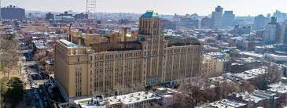
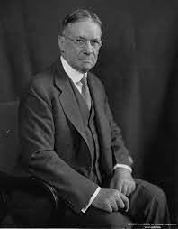

Brooklyn Technical High School
Majors Alumni Activities History
Brooklyn Tech was founded in 1922 by Albert L. Colston. He envisioned a school with a concentration on math, science, drafting, and shops. He wanted to prepare students for college and a career in industry.
Location
Brooklyn Tech is located in downtown Brooklyn, near Barclays Center. Below is a map of the train stations many students take to get to Tech.

Fun Facts
- Brooklyn Tech ranks 6th in NYC and 46th in the US.
- Brooklyn Tech has over 5,900 students.
- Brooklyn Tech has over 40 athletics and 150 clubs.